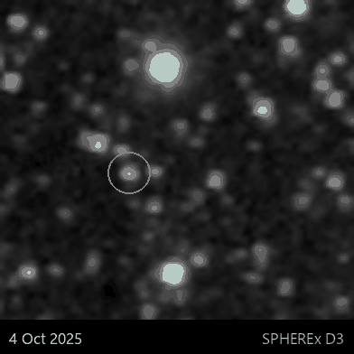

Zwergplanet
Pluto
Der Zwergplanet, den Clyde Tombaugh 1930 durch den Vergleich zweier Fotografien fand. SPHEREx hat ihn hier im Oktober 2025 erfasst, wie er von einem Halt des Teleskops zum nächsten weiterzieht.

Der Punkt, der sich auf den beiden Fotografien bewegt hat, war Pluto selbst, mehr als fünf Milliarden Kilometer entfernt. Hier sagt dem Werkzeug niemand, wohin es schauen soll: Seine Suche nach wandernden Punkten findet Pluto bei jedem Halt des Teleskops, der ihn erfasst hat, etwa eine halbe Bogensekunde von der Bahn entfernt, die die NASA berechnet. Und sein Spektrum trägt die Spur von Methaneis.
Worauf zu achten ist
Jedes Bild ist ein Halt des Teleskops, in zeitlicher Reihenfolge. Die Sterne bleiben, wo sie sind; der Punkt im Ring wandert entlang der gepunkteten Linie nach Westen. Diese Linie ist die Bahn, die das JPL der NASA aus Plutos Umlaufbahn berechnet. Unter den Bildern meldet die eigene Suche des Werkzeugs nach wandernden Punkten, was sie gefunden hat, ohne dass ihr jemand gesagt hat, wohin sie schauen soll.
SPHEREx hat 514 Aufnahmen dieser Stelle, vom 25. April 2025 bis zum 4. Oktober 2026.
Quellen: SPHEREx, NASA/JPL-Caltech, IRSA · JPL Horizons · SkyBoT, IMCCE · Wikipedia